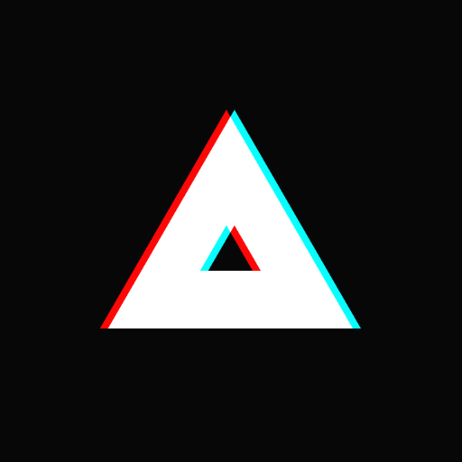
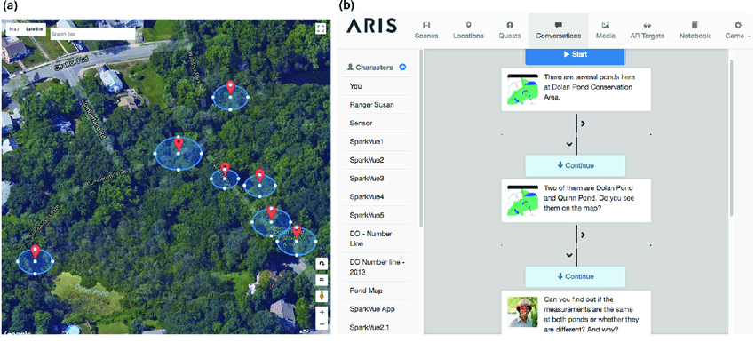
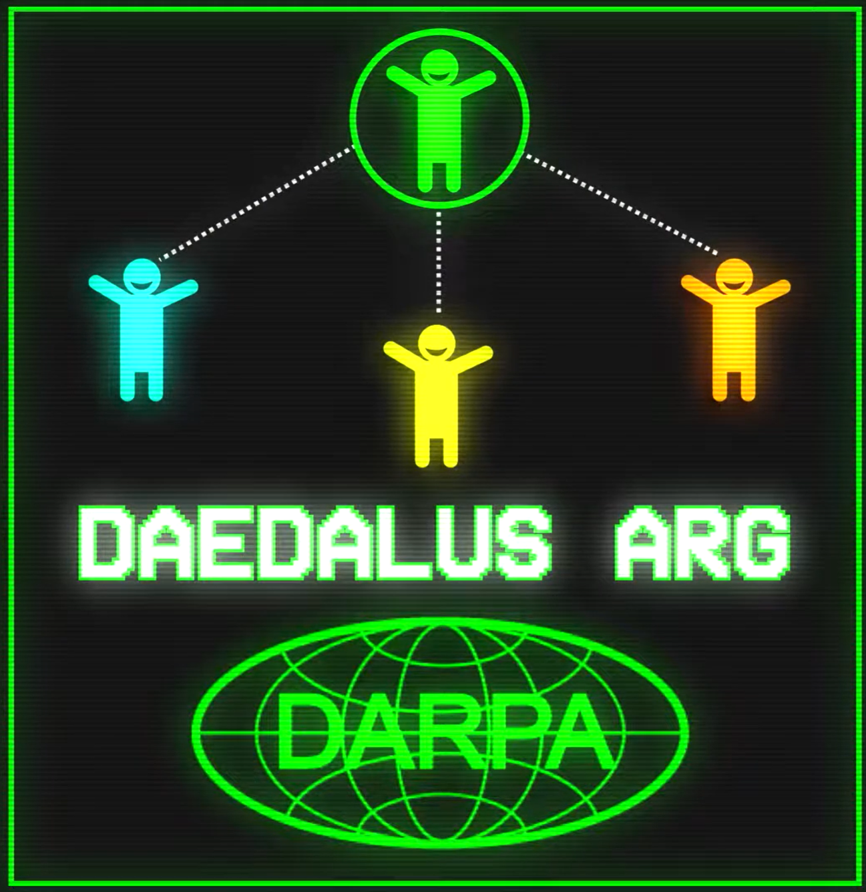
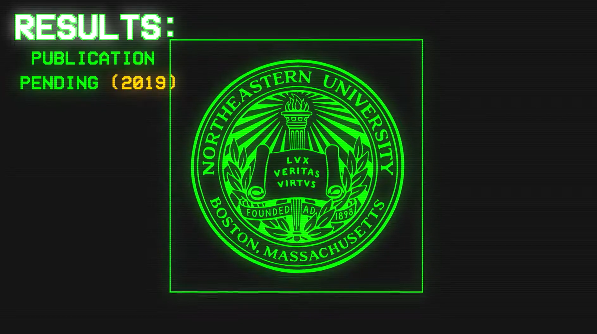
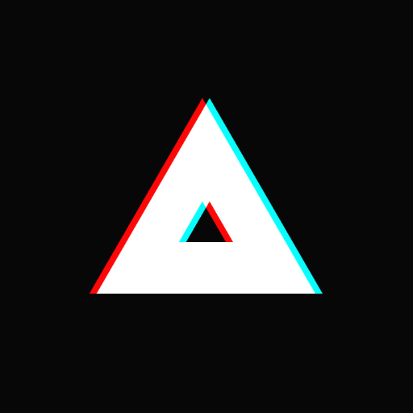
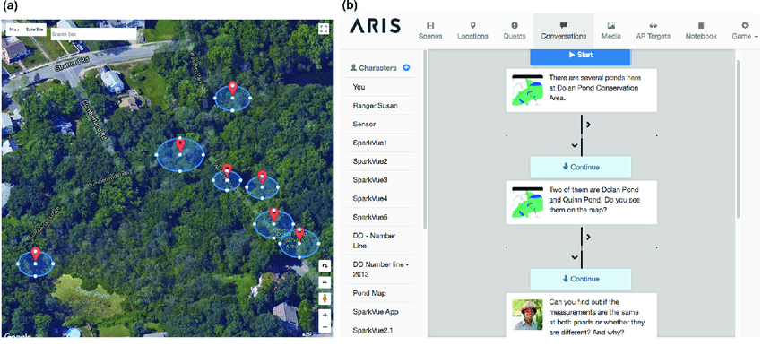
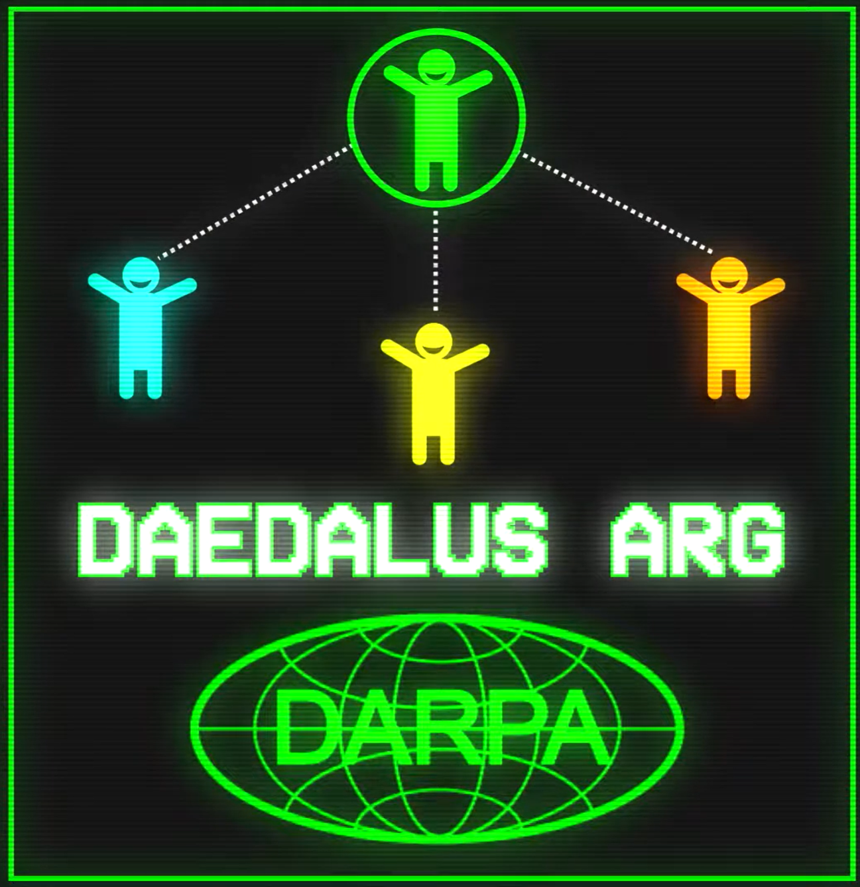
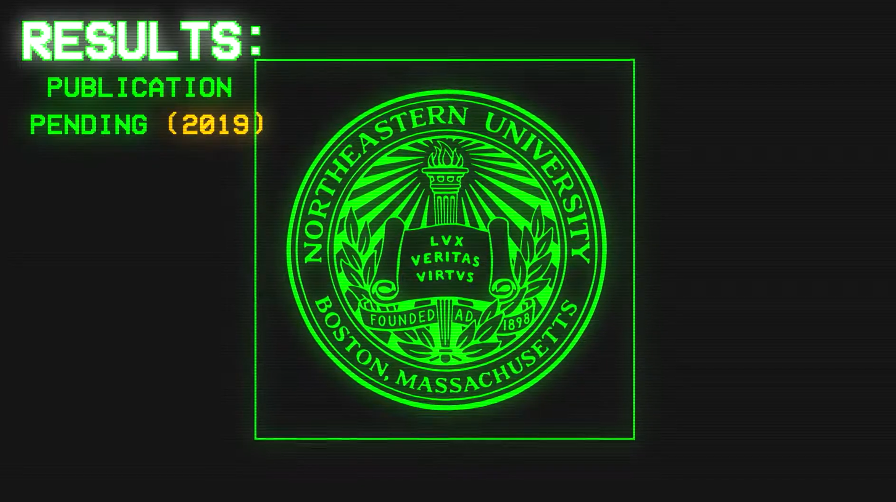

Game

THE PROBLEM: Understanding how people coalesce and adapt to problems is incredibly important for organizations that need to build teams. Currently there is no way to measure how teams adapt outside of a laboratory setting.
THE SOLUTION: This week-long game pits small teams of players against each other in a race to solve puzzles over Slack and in the real world. In essence, this is a very difficult text-based “escape the room.”
The game uses text, images, and video to tell the story of Daedalus, a problem-solving AI that the players must train by solving puzzles. Each puzzle was designed based on foundational research and human-centered design to maximize uncertainty and provide real, measurable results.
> Used ARIS game engine to program location-based ARG gameplay.
> Wrote dialogue and descriptive text for characters and rooms in virtual labyrinth.
> Helped design puzzles, and wrote up brief but instructive documents explaining how to solve the puzzle.
> Created overarching narrative of virtual labyrinth, including plot twists and character arcs.
 






